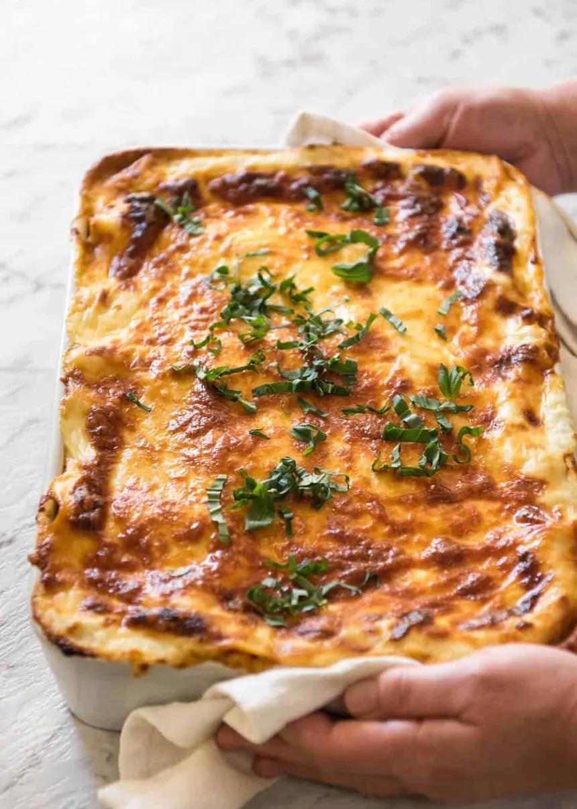

To cook a classic lasagna, start by layering your ingredients in a baking dish. Begin with a thin layer of meat or marinara sauce on the bottom so the pasta doesn't stick, followed by a layer of lasagna noodles. Next, spread a mixture of ricotta cheese, egg, and herbs, then add more sauce and a generous handful of shredded mozzarella and parmesan cheese. Repeat these layers until your dish is full, ensuring the top layer is completely covered in sauce and an extra layer of mozzarella to keep it from drying out.
Once assembled, cover the dish tightly with aluminum foil—making sure it doesn't touch the cheese—and bake in a preheated oven at 190°C (375°F) for about 45 minutes. Remove the foil during the last 15 minutes of baking to let the cheese turn golden brown and bubbly. Finally, let the lasagna rest on the counter for 15 minutes before slicing; this gives the structural layers time to set so it doesn't fall apart when you serve it.